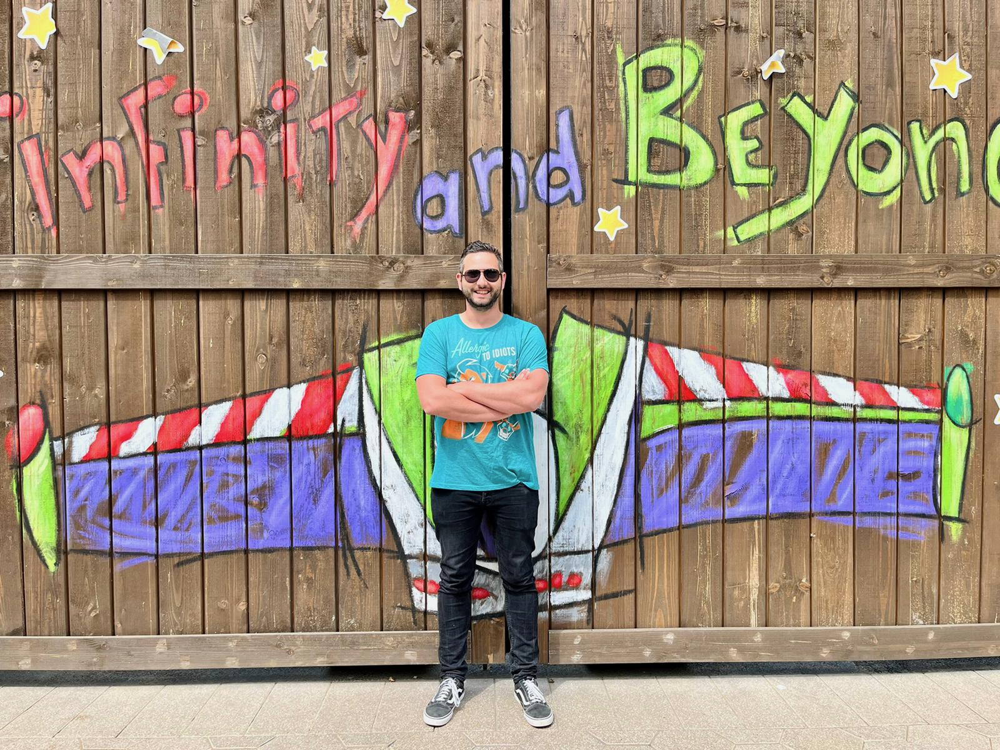

 Welkom op mijn pagina. Mijn naam is Dave, getrouwd en vader van drie kinderen.
Op dit moment werk ik met veel plezier als operationeel manager en daarbuiten volg ik de cursus webdesign via NHA. In korte tijd heb ik daar al veel geleerd en met veel plezier heb ik deze huiswerkopdracht gemaakt.
Ik ben groot Nintendo-fan, dus in mijn vrije tijd kun je mij geregeld vinden achter een potje Mario Kart. Als ik dat niet aan het doen ben, kom ik ook graag in pretparken, zoals de Efteling. Ik ben ook dol op Disneyland Parijs, maar daar kom ik dan helaas weer niet zo vaak.
Ik houd ook erg van lezen en zelf verhalen schrijven, voornamelijk fantasy. Uiteraard ga ik ook graag op vakantie.
Qua sport houd ik van boogschieten, maar fitness ik ook.